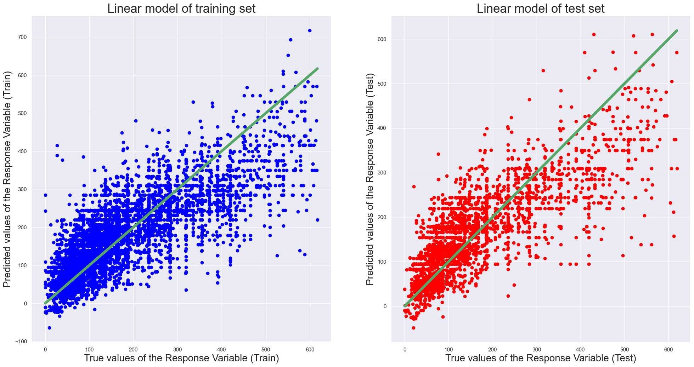

"""
Anit Mathew
CMPS 530 01
This program implements Multiplr Linear Regression model
"""
# Basic Libraries
import pandas as pd
import seaborn as sb
import numpy as np
import matplotlib.pyplot as plt # we only need pyplot
sb.set() # set the default Seaborn style for graphics
from sklearn.preprocessing import StandardScaler
from sklearn.model_selection import train_test_split
# Libraries used for Modelling
from sklearn import linear_model
from sklearn import preprocessing
from sklearn.metrics import r2_score
from sklearn.linear_model import LinearRegression
import statsmodels.api as sm
# reading the dataset
df = pd.read_csv('dataset.csv')
df = df[['room_type','bedrooms','price','reviews','overall_satisfaction', 'accommodates', 'latitude', 'longitude']]
# performing label encoding so that labels could be converted into numeric form to make machine readable
le = preprocessing.LabelEncoder()
df = df.apply(le.fit_transform)
df.head()| room_type | bedrooms | price | reviews | overall_satisfaction | accommodates | latitude | longitude | |
|---|---|---|---|---|---|---|---|---|
| 0 | 2 | 1 | 50 | 2 | 0 | 1 | 6249 | 1238 |
| 1 | 2 | 1 | 67 | 0 | 0 | 0 | 333 | 7851 |
| 2 | 2 | 1 | 62 | 0 | 0 | 1 | 7728 | 8104 |
| 3 | 2 | 1 | 57 | 1 | 0 | 2 | 6663 | 2558 |
| 4 | 2 | 1 | 65 | 1 | 0 | 1 | 1892 | 4875 |
# To convert NaN values to 0 for preparation for Modelling
newdf = df.fillna(0)
# Checking to ensure that there are no NULL entries
newdf.isnull().sum()room_type 0
bedrooms 0
price 0
reviews 0
overall_satisfaction 0
accommodates 0
latitude 0
longitude 0
dtype: int64# Separating X and y for Modelling
X = pd.DataFrame(df[["bedrooms", "room_type",'reviews', 'overall_satisfaction','accommodates']]) #Predictor Variable
y = pd.DataFrame(df["price"]) #Response Variable
# Scaling
scaler = StandardScaler()
X = pd.DataFrame(scaler.fit_transform(X), columns=list(X.columns))# dividing the datset into training and test set.
X_train, X_test, y_train, y_test = train_test_split(X, y, test_size=0.3)# Creating and fitting the model
linreg = linear_model.LinearRegression()
linreg.fit(X_train, y_train)LinearRegression()In a Jupyter environment, please rerun this cell to show the HTML representation or trust the notebook.
On GitHub, the HTML representation is unable to render, please try loading this page with nbviewer.org.
LinearRegression()
# Coefficients of the Linear Regression line
print('Intercept of Regression \t: b = ', linreg.intercept_)
print()
# Print the Coefficients against Predictors
print(pd.DataFrame(list(zip(X_train.columns, linreg.coef_[0])), columns = ["Predictors", "Coefficients"]))
print()Intercept of Regression : b = [158.49131396]
Predictors Coefficients
0 bedrooms 46.969974
1 room_type -31.342611
2 reviews -8.215275
3 overall_satisfaction -20.322066
4 accommodates 35.449917
# Predict Response corresponding to Predictors
trainPredictionLR = linreg.predict(X_train)
testPredictionLR = linreg.predict(X_test)# Plot the Predictions vs the True values
f, axes = plt.subplots(1, 2, figsize=(24, 12))
axes[0].scatter(y_train, trainPredictionLR, color = "blue")
axes[0].plot(y_train, y_train, 'g-', linewidth = 5)
axes[0].set_xlabel("True values of the Response Variable (Train)", fontsize=20)
axes[0].set_ylabel("Predicted values of the Response Variable (Train)", fontsize=20)
axes[0].set_title("Linear model of training set", fontsize=25)
axes[1].scatter(y_test, testPredictionLR, color = "red")
axes[1].plot(y_test, y_test, 'g-', linewidth = 5)
axes[1].set_xlabel("True values of the Response Variable (Test)", fontsize=20)
axes[1].set_ylabel("Predicted values of the Response Variable (Test)", fontsize=20)
axes[1].set_title("Linear model of test set", fontsize=25)
plt.savefig("Linearmodel.png")
#add constant to predictor variables
x = sm.add_constant(X)
#fit linear regression model
model = sm.OLS(y, x).fit()
#view model summary
print(model.summary())
#display adjusted R-squared
print("The adjusted R-squared is : ",1 - (1-linreg.score(X, y))*(len(y)-1)/(len(y)-X.shape[1]-1)) OLS Regression Results
==============================================================================
Dep. Variable: price R-squared: 0.642
Model: OLS Adj. R-squared: 0.642
Method: Least Squares F-statistic: 3266.
Date: Tue, 13 Dec 2022 Prob (F-statistic): 0.00
Time: 18:14:21 Log-Likelihood: -52465.
No. Observations: 9111 AIC: 1.049e+05
Df Residuals: 9105 BIC: 1.050e+05
Df Model: 5
Covariance Type: nonrobust
========================================================================================
coef std err t P>|t| [0.025 0.975]
----------------------------------------------------------------------------------------
const 159.1328 0.803 198.058 0.000 157.558 160.708
bedrooms 47.6825 1.440 33.104 0.000 44.859 50.506
room_type -30.6737 0.925 -33.174 0.000 -32.486 -28.861
reviews -7.4601 0.908 -8.216 0.000 -9.240 -5.680
overall_satisfaction -21.6871 0.904 -23.987 0.000 -23.459 -19.915
accommodates 35.9368 1.539 23.358 0.000 32.921 38.953
==============================================================================
Omnibus: 1522.731 Durbin-Watson: 0.974
Prob(Omnibus): 0.000 Jarque-Bera (JB): 4229.304
Skew: 0.898 Prob(JB): 0.00
Kurtosis: 5.814 Cond. No. 3.70
==============================================================================
Notes:
[1] Standard Errors assume that the covariance matrix of the errors is correctly specified.
The adjusted R-squared is : 0.6416187255479299